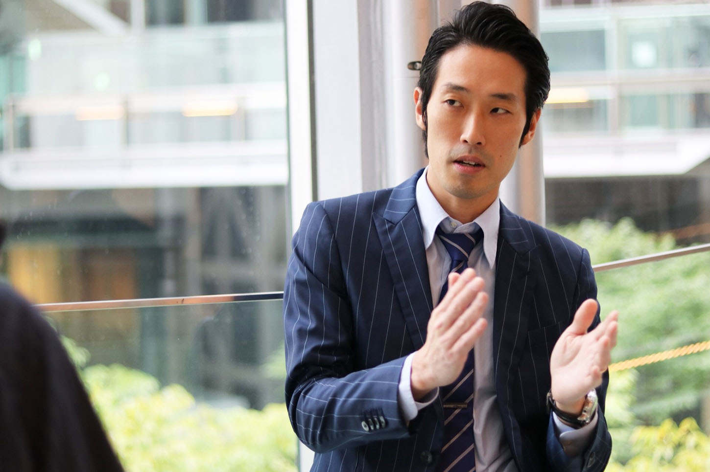

| プロゴルファーを諦めた男が、月収２００万になるまで 〜一生食いっぱぐれない不動産投資のススメ〜 | |
| 早川直樹 | |
| Hitotsuku Publication (2018) | |
早川直樹
あの時、私は『無残にも潰されていくサラリーマンたち』の間近にいました。
私ですか？
いえ、私はサラリーマンではありませんでしたから直接的な被害は受けていません。
ただ、周囲の思いがけない激変を目の前にして、直接関係のない私も驚愕していたことをはっきりと覚えています。
私が日頃から接していたサラリーマンの皆さんは、日々、仕事と家庭の両立に一生懸命に奮闘していました。希望溢れる将来を微塵も疑わずに努力していていたことは間違いありません。彼らは怠けていたから潰されていったわけではないのです。
忙しい日常の合間を縫って、彼らは私のゴルフレッスンを受けに来てくれていました。趣味に没頭できるその時間が、彼らの憩いのひと時だったことでしょう。みんな充実しているいい表情をしていました。私も彼らのその笑顔にどのくらい励まされたことか......。
しかしそんな笑顔は次々と消えていきました。あの時、彼らとその家族はどんな思いだったのでしょうか。それを考えると今でもいたたまれない気持ちになります。
あれは、今からおよそ10
年前の出来事でした。米国に端を発した経済恐慌『リーマンショック』が日本を襲ったときのことです。
20
代の方は、その名前くらいは聞いたことがあるぐらいでしょうか。30
代後半以上の年齢の方はもちろんよくご存知と思います。
世界経済は急速に冷え込んでいきました。そして、ブリザードのように日本の企業とサラリーマンを飲み込んでいったのです。
リーマンショック以前の米国の政策金利は３．００％
だったのですが、不況の影響で０．２５％
まで下がりました。記念すべき米国史上初のゼロ金利政策です。日本では、猛烈に進行していく円高に頭を抱える人たちばかりでした。ちなみに日本の金利はあの頃からずっと０．１０％
です。
当時私が務めていたゴルフのレッスンスタジオから、サラリーマンたちの姿は忽然と消えていきました。時折鳴る電話はレッスンのキャンセルを伝えるものばかりでした。
趣味に興じているどころの騒ぎではなかったわけです。
聞いた話では、ローンで購入した自宅を泣く泣く手放し、路頭に迷った人たちも多くいたようです。
ただ、驚くことにそんな状況でも、一流企業の会長や社長は平然としたものでした。
高所得者のアッパー層は、リーマンショックなどどこ吹く風で、高額のレッスンを今までどおりに笑顔で受け続けていました。このギャップにも私はビックリしました。
有事の際に甚大な被害を受けるのは、役員などではなく、会社のために尽くし、支えてきたサラリーマンなんだってことがよくわかりました。切り捨てられ、犠牲になるのは、将ではなく、兵隊なのです。
これからの時代、『会社を信じてただひたすら働くことは、実は大きなリスクを伴うこと』なんだということがよくわかりました。
もし、『突然会社をクビにされた』ら、明日からどうやって生きていけばいいのでしょうか？』
あなたはそんなことを考えたことがありますか？
私はシビアな現実を見せられて、明日は我が身ではないだろうかと恐怖しました。
しかし、今考えると、あの事件が私の人生にとっては良い教訓になっています。おかげで今では、『月収２００万円を超える生活』ができるようになっているのですから。

申し遅れました。私の名前は『早川直樹』と申します。35
歳の既婚者です。
芸能人に例えると誰に似ているかですか？
それはご想像にお任せします。高身長だということだけはお伝えしておきます。
おかげさまで、２人の子供は元気に育っています。４歳の娘と、２歳になる息子です。まさに可愛い盛りです。
住んでいるのは東京都です。私は生まれも育ちも江戸っ子なんです。
仕事ですか？
今回お話をする内容を配慮して名前はお伝えできませんが、東証一部のアパレル関係の会社に勤めています。
アパレル関係の仕事といっても売り場には出ていません。かといってデザインするわけでもないんです。本部の管理部で日本中の店舗サポートをしています。主にデスクワークになります。
そうです。今の私は『典型的なサラリーマン』なんです。
２００８年のリーマンショックの時に、周囲の悲惨な現状を目の当たりにしていたにも関わらず、私がサラリーマンをしていることに疑問を持たれる方も多いことでしょう。
それはそうです。あの時は私もサラリーマンじゃなくて良かったと思いましたから。
だから、私は『表向きだけ』典型的なサラリーマンなんです。ということは裏があるってことです。
あ、勘違いしないでください。悪いことは何もしていませんから。
何が特別なのかというと、私には『現在務めている会社で出世したいという気持ちがほとんどない』ことです。
だからといって、それでお客様に対するサービスが低下するわけではありません。ただ、『現在務める会社での目標は何もない状態』なんです。
「だったら早く辞めてしまえ」っていう怒号が聞こえてくるような気がしますが、これには理由があるんです。そちらについては今後、順を追ってじっくりとお伝えしていきます。
お金を稼ぐことに興味がないわけじゃないです。むしろ逆です。
『自分の人生をしっかりと安定させて、有意義なものにしたい』からこそ『会社に頼っていない』のです。矛盾していますでしょうか？
サラリーマンとしてバリバリ活躍しても、一寸先は闇ですから。２００８年に痛感しました。終身雇用なんてもう前時代的です。突然リストラされることなど珍しい話でもありません。
だから私は、『副業』をしているんです。
『自分の人生、そして家族を守るため』にです。
「え？ 副業？」って思いますよね。私もひと昔前まではそう思っていました。でも今は違います。
『月収２００万円』
どうでしょう？
サラリーマンの給料で実現するにはハードルが高いですよね。でも私は達成しました。
それはなぜか。
副業をしているからです。ちなみに今年の年収はトータルで約５，０００万円になります。月収２００万円というのは『毎月入金が計算ができる収入』で、不定期でもたくさんの収入の柱があるため、トータルでは５，０００万円ほどになっています。
「副業でそんなに稼げるわけがないだろ」と思っているあなた、それは先入観です。
最近では残業をさせない代わりに副業を認める会社も多くなってきました。ですから副業の経験がある方も多くいらっしゃるのではないでしょうか。
あなたは、私がどんな副業をしていると思われますか？
株式投資ですか？
それも今年から始めました。月利５％
を目標に継続中です。ですが、そちらは月収２００万円に含めていません。軌道に乗るのはこれからの話ですから。
もちろんアルバイト感覚の副業では、月に数万円というのが関の山です。到底月収２００万円など達成できるはずもありません。
かといって特殊なスキルが必要な副業でもありません。その気になれば誰でもできる副業です。ただ、ハードルは高いと思われていますし、資産や資金のあるアッパー層の話だと見向きもしていないかもしれません。
どうでしょうか。このヒントでピンときましたか？
正解は『不動産投資』です。
他にもいくつか掛け持ちして副業をしていますので、月収２００万円はあくまでもトータルのお話になりますが、副業の柱は不動産投資なんです。こちらにはサラリーマン給料は含めていません。
「いやいや、それは副業のレベルの話じゃないでしょ」って信じてもらえない方もいらっしゃるかもしれませんが、実はこれが、まったくもって実現可能な話なんです。
『不動産投資』と聞くと真っ先に思い浮かぶのは、土地の売買、いわゆる『土地ころがし』というものではないでしょうか。
そのようなものは、資産や豊富な資金があればこそできる話であって、一般人には縁遠いビジネスだと割り切っている方が多いと思います。
確かに土地を売買するような『不動産投資』を副業ですることは、私のような庶民には難しいことでしょう。しかし『土地ころがし』だけが『不動産投資』ではありません。
私が副業として取り扱っているのは、『アパート経営』から『家賃収入』を得る『不動産投資』なのです。
「え？ 何が違うの？」ですか？
２つのビジネスは『不動産投資』という点では共通しますが、内容は大きく異なります。
『土地ころがし』のような土地の売買は、地価が上がったタイミングで売って初めて利益が出ます。バブルが弾けたときのように地価が下がれば大損です。
さらに、土地の売買が成立しなければ１年でも２年でも寝かしつけたままになってしまいます。利益を出すのに数年かかるケースもあるわけです。
つまり『安定した収入は見込めません』。
しかし、『アパート経営』であればどうでしょうか。土地転がしとは、まったくハードルの高さが違います。顧客はすぐに見つかるでしょう。住む人が決まれば、毎月『家賃収入』が確実に入ります。
そうです。『アパート経営』だったら、『毎月安定した収入が見込める』わけです。
私が経営しているアパートの数ですか？
現在は『６棟』です。部屋数にすると『63
室』になります。これでどのくらいの『家賃収入』になると思いますか？
『家賃収入』を売上だとすると、私の月の売上はざっと『２５０万円』です。諸経費などを差し引いておよそ『１００万円の利益』を生んでいます。
サラリーマンとしての給料にプラス１００万円あるライフスタイルを思い描いてみて下さい。まったく世界が変わります。
おかげで、ずいぶんと生活には余裕ができました。高級料理店に家族でディナーに出かけても、料金がいくらなのか気にならなくなりましたから。かといって、散財すると妻に叱られるんですが......。
先日もフランスの一流ブランド「Berluti」（ベルルッティ）の40
万円ほどするバッグを購入して苦い顔をされました。
イタリアブランドの「Valextra」（ヴァレクストラ）の牛革財布も愛用しています。こちらは13
万円ほどでした。
私にとっては『モチベーションＵＰのため一品』であり、『いいものを買って大事に使うことで逆に長持ちさせる』ということで、一応考えがあっての買い物だったのですが（笑）。
私の戯言はさておき、『好きな物が気軽に購入できるライフスタイル』が送れるようになったのも、副業が成功した恩恵です。私の会社に勤める同僚のサラリーマンでは、誰もベルルッティのバッグは持っていません。
株にしても、ＦＸにしても副業で取り組まれている方が多いと思いますが、こちらも毎月安定して利益をあげることは難しいです。月によっては数十時間という時間を費やしたにも係わらず損失だけが膨らむことすらあるのですから。
その点、『アパート経営』では予定通りの『家賃収入』が、黙っていても入ってくるのです。まさに『不労所得』です。しかも『リターン』が早いですから。中古物件であれば購入のために契約したら、もう翌月から収入があるんです。すでに部屋が埋まっている状態ですから、住人が決まるのを待つ必要もありません。
「そんなこと、誰でもできるのか？」ですか？
誰にでもできます。もちろんコツはあります。気を付けていかなければならない注意点もあります。私は経験で、『こうすれば成功するというノウハウ』を身に付けました。それをあなたにお伝えしていくことが私の今の目標の一つです。
ただし、自己資金が限りなくゼロに近い状態で、この『不動産投資』を始めていくためには重要なポイントがあるのです。私は、そこをクリアするのにやや時間はかかりました。でも、あなたはこの条件をすでに満たしているのではないでしょうか。
「どんな条件？」ですか？
それはもちろんお答えします。でももう少し私のおしゃべりに付き合ってください。なぜ私がこの副業を始めるのに時間を必要としたのか、始めるきっかけは何だったのかまで詳しくお伝えしていきたいのです。
少し昔話に付き合ってもらえますか？
ああ、その前に『不動産投資』以外の副業についてもお伝えしておかなければなりません。サラリーマンの収入以外に毎月２００万円の収入があると先にお話していましたから、家賃収入だけだと１００万円にしかなりません。
残りの１００万円の収入について触れてから、昔話をさせていだきます。
２００８年のリーマンショックから学んだことは、『いつ会社をクビになってもおかしくない世の中になった』ということだけではありません。
私が学んだのは、『リスク管理の重要性』です。一箇所に投資を集中させた場合、そこがコケると大きな損失となり、取り返しがつかなくなります。投資はある程度分散させる必要があるのです。
リスクヘッジという考え方ですが、『キャッシュポイント』が多いほどリスクを抑えつつ、収入を増やしていくことができます。先ほどお話をした『株式投資』もその１つです。こちらで利益を出していくのが今後の目標であることもお伝えしました。
ビットコインは価格変動が激しすぎてリスキーなので、『マイニング投資』を行っています。チャートを眺めながらトレードしていたのでは時間が不足しがちになりますから。こちらは放置しておけばいいから楽です。こちらで月の収入がおよそ『80
万円』です。
他にも『物販出資』をしていて、こちらの月の収入がおよそ『25
万円』となっています。物販業者に出資して、その利益が分配されるものです。特に時間をとられる作業はありません。副業として充分に併用が可能です。
さらには、民泊ビジネスや自動売買ツールを使ったＦＸ投資なども着手しております。こちらも合わせて数十万の利益となっています。
正直毎月の収入はほとんど２００万円を超えています。『２００万円』というのはボトムです。
このようにして私は本業とも言えるサラリーマンとしての給料以外で、『月収２００万円』を実現させました。
興味を持っていただけましたか？
成功するためには、まずは『興味を持つこと』です。
黙って待っているだけでは生き残っていくことが厳しい世の中になりました。新しいビジネスもどんどん誕生しています。そこに興味が持てるかどうかは、『成功できるか』、『生き残れるか』の分かれ道になります。
しかし、興味を持つだけでは前には進めません。さらに一歩を踏み出す勇気が必要です。『自分から積極的に動くこと』がポイントなのです。
これからの時代、『貪欲に情報を取りに動ける人』が成功していくでしょう。
具体的に言うと、いったいどんなビジネスなのだろうと興味を持ったら、実際にどのように取り組んでいるのか『調べたり』、そのビジネスで実績をあげている『人の話を聞く』ことです。
そうすることで無理なく併用できる副業がきっと見つかります。今の仕事と併用するコツも知ることができるのです。
副業で成功することで人生は１８０°
変わります。必死に会社にしがみつく必要もなくなります。『自分の人生は自分で選択する』ことができるようになるのです。
いつどうなるのかという不安ではなく、将来への期待感いっぱいの生活を送ることができるようになります。私は多くの人にこの幸せを実感していただきたいと思っています。
だからこそ、伝えられることはすべて伝えていきたいです。『不動産投資』だけではありません。私が成功している他のビジネスについても同様です。
私は生来、他人に何かを教えて、その笑顔を見ることが大好きです。
ゴルフのレッスンコーチをしているときからそうでした。どうすれば相手に上手に伝えられるのか、どう教えれば相手を満足させられるのか、そのコツを掴んだのがゴルフのレッスンコーチをしていた頃かもしれません。
それでは少しの間、私の昔話をさせていただきます。この中で、『アパート経営』という副業を始めるために私がどのような決断を下し、何をしたのかもお伝えできます。
それでは私の両親について、そして子供の頃にどう育ってきたのか、ということからお話させていただきましょう。
僭越ながら、私に興味を持っていただくことも、成功への近道かもしれません。
「直樹、中学に入っても一緒に野球やろうな」
「あ、ああ」
小学校でずっと野球チームに所属していた私は、小学６年生の夏に友達にそう言われて苦笑いしたことを覚えています。
野球を続けていくつもりでしたが、母の助言もあり、私立中学校への受験準備を進めていたからです。つまり中学生になっても学校が違うわけですから、その友達とは同じチームでプレイすることはできないわけです。
「母さん、俺、本当に受験するんだよね？」
「当たり前でしょ。それが直樹のためなんだから」
受験する中学校は中野区にある明治大学付属中野中学校です。今でこそ偏差値67
と都内ではなかなかの進学校になっていますが、当時はそこまで合格が難しい学校ではなかったです。私が入学して以降、年々レベルが高くなっていった気がします。
まあ、中学受験は母の助言というよりも、強制のようなものだったのですが......。
中学受験をしておけばエスカレーター式に明治大学に進めます。小学校のチームメイトたちと離れるのは寂しい気持ちもありましたが、それが私のためだという母の言葉を疑うこともありませんでした。母の指示は私にとって絶対的なものでした。
男子校ですからもちろん異性と触れ合う機会もないのですが、当時の私は、野球ができればそれでよかったんです。今振り返ってみるとずいぶん純粋な気持だったと思います。
中学生の頃は野球に打ち込んでいました。典型的な野球少年です。
だからといって勉強しなかったわけではないんです。３００人くらい同級生がいて、定期試験では常時30
位には入っていましたから。
「直樹、今回の定期試験の結果持ってきて」
母は薬剤師でした。でしたというか、未だに現役です。薬剤師は素晴らしいです。
定年なんてないですし、就職先にも困ることなんてないですから。あの頃からいつも母は忙しかったと思います。
「数学、ここ、前も同じ間違いしてたよね。どうして？ 勉強きちんとしていたの？」
答案が97
点という好結果でも、母は必ず間違えた箇所を突っ込んできました。努力をしていたとかいう経過なんて見てもくれません。母はテストの結果しか私を評価しませんでした。結果がすべてなのです。
後に足を踏み入れた、『結果が全ての投資の世界』がしっくりきたのも、このころの母の対応が手伝ったのかもしれません。評価してもらうために、私は必死で野球と両立して勉強していました。
文武両道って言うと聞こえはいいですけど、何のために勉強をしているのか、そんな重要なことからは目を背けていた気がします。敷かれたレールの上をとにかく必死に走っていました。それが人生だと疑うこともありませんでした。
私には選択肢がなかったんです。
野球は楽しかったです。目立ちたいっていう気持ちはなかったと思います。チームの一員として貢献することで、とにかく自分の存在意義を見つけたかったのだと思います。
野球のポジションはセカンドでした。地味ですけど器用さが要求されるんです。打順は２番バッターで、よくある『２番セカンド』っていう役割です。つなぎ役、サポート役って感じでしょうか。サインを逃さずに確認して、監督の要求にはしっかり応えることができていました。
中学生の後半で身長がぐんと伸びまして。あの頃にしてみれば珍しい大型の２番セカンドでした。今のプロ野球ではそんな選手が活躍しているチームも見かけますが、当時は、そんな大柄なのになんでセカンド？ という感じでした。
中学３年の夏の試合で引退になるのですが、私は完全に「燃え尽き症候群」だったんです。よく聞く話だと思いますが、打ち込むことがあって忙しいほうが勉強にも集中できるんです。夏休みはやることがなくなって、自分でもびっくりするほどだらけきっていました。
そんなときに父が声をかけてくれたんです。時間を持て余してウダウダしている私のことを見かねたんでしょう。
「直樹、ゴルフやるか」
いやいや中学生にゴルフです。ゴルフなんてオヤジのするスポーツだと思っていました。特に私の場合は野球をやっていましたから、止まったボールを打つのに何が楽しいんだろうって思っていました。野球は動いているスピードボールを弾き返しているわけですから。
ここから先は私にも『選択肢』というものが目の前に現れます。１つ１つが重要な分岐点となり、私の人生を大きく左右していくことになります。
このときの私には２つの選択肢がありました。ぜひあなたも私の立場で検討してみて下さい。
Ａ・ゴルフの練習に付き合ってみる Ｂ・父の誘いをきっぱりと断る
普通であれば中学３年の男子にとっては親などうっとうしい存在です。一緒に行動することを嫌がる時期ではないでしょうか。
でも私は父に対しそのような気持になったことはありませんでした。母に比べてはるかに私の意見を尊重してくれていたからかもしれません。
だからでしょうか、私はＡのゴルフの練習に付き合ってみることを選択したのです。他にやることもなかったですし、父よりボールを飛ばす自信もあったんで、ちょっと飛距離で驚かせてやろうかなって思って練習場に付き合ったんです。
この選択がその後の私の人生を決めることになります。
正直に言うと、初めからゴルフのことを馬鹿にしていました。野球よりはるかに簡単なスポーツだと思っていたからです。
実際、ゴルフの練習場で、クラブを握ってボールの前に立っても同じ気持ちでした。足元のボールを打つだけですから。誰が邪魔するわけでもありません。動きまわる必要もありません。ただ立って、クラブを振るだけです。
私は完全にゴルフをナメきっていました。
でも実際にやってみるとできなかったのです。もちろんボールには当たります。でも真っすぐ飛ばないのです。振れば振るほど、力を入れれば力を入れるほどひどい当たりになっていきました。
このときは、恥ずかしいという気持ちよりも、不思議に思う気持ちの方が強かったです。
野球だとファールを打つのも技術の１つですが、ゴルフでは単なるＯＢです。ゴルフでは右や左に曲がって飛ぶことは何のプラスにもならないのです。
隣で練習している父の当たりを見て驚きました。私よりはるかに真っすぐ、遠くに飛んでいます。ドライバーを使ってみて余計に差が明らかになりました。
私は自分の先入観が間違っていることに気が付きました。
そもそも野球とは飛距離が全然違うんです。私は軟式野球だったので、なおさらそう感じました。仮に硬式野球だとしても、東京ドームだってポール際まで１００メートルしかありませんから。１２０メートルも飛ばせば完全にスタンドインです。でもゴルフは３００ヤードとか飛ぶわけです。倍以上の飛距離です。
メートルもヤードも似たようなものだと思ってください。とにかく１２０メートルなんてゴルフじゃ目と鼻の距離の話なんです。ショートアイアンで簡単に届きますから。これはカルチャーショックでした。
私はこの後、中学から高校へとエスカレーター式に進学していくわけですが、ここで大きな選択に悩むことになります。
Ａ・野球を続け、憧れの甲子園を目指す Ｂ・新しくゴルフを始める
高校野球は軟式ではなく硬式野球になります。土俵でいうとプロ野球と同じです。本当に野球の楽しさを感じられるのはここからなのです。しかも「甲子園」という夢の舞台も用意されています。
ここまで野球をしてきたのであれば、当然のように甲子園を目指して続けていくはずなのですが、私は悩みました。
理由の１つは勉強との両立の難しさです。高校野球の練習は中学の頃の練習とは比較になりません。もはや部活という次元を超越しています。勉強などしている体力も時間もなくなります。母はその状況を絶対に許さないでしょう。
もう１つは、ここまで野球をやってきたからこそ、自分自身の実力がよく理解できていたということです。プロ野球の選手になるなどまず不可能だと自覚していました。
つまり自分の限界を知ったのです。
一方でゴルフはどうでしょうか。今でこそ若い世代のプロゴルファーがたくさん活躍していますが、当時はそこまでメジャーなスポーツでもありませんでしたし、高校から始めれば充分にプロゴルファーとしてやっていける可能性がありました。
そこで私は、Ｂの新しくゴルフを始めることを選択したのです。
学校にはゴルフ部は一応ありましたが、特に名門ではなかったですし、何より母の期待に応えるために勉強との両立を考えて、ゴルフスクールに通うことになります。
勉強との両立は楽でした。ゴルフスクールであれば、負担がかからないように調節しながら練習できるからです。試験前は自分の意思で休むこともできます。おかげで高校での成績は自慢できるものでした。試験の結果は、いつも学年で10
番くらいでした。
もちろん、問題なく明治大学に進学できました。
そのときの私はゴルフを続けていく気満々でした。そして『プロになる』つもりでいたのです。大会にも出場はしたことがないですし、プライベートラウンドでもたいしたスコアではなかったんですが、その自信はありました。
何せ周囲の同世代でゴルフをしたことのある人なんていませんでしたから。高校から始めている自分にはかなりのアドバンテージがあると考えていましたし、大学で本格的に打ち込めば楽にプロになれると考えていたのです。
大学生になった私は、希望しているとおりにゴルフ部に所属することになります。
しかし問題がありました。ゴルフは何かとお金のかかるスポーツです。野球であればグローブやユニフォームなどを購入すれば他はほとんど費用がかかりませんが、ゴルフはそうはいきません。
そもそもゴルフのラウンドをすること自体が高額なのです。高校生の頃はゴルフレッスンの費用を親に払ってもらっていましたが、さすがに大学生になってまでいちいち頼ることはできません。
そこまでしてゴルフに打ち込むことを母は許さないでしょう。ですから、アルバイトをしてお金を稼がないとゴルフを続けていけないわけです。かといってアルバイトに精を出していたのではゴルフの腕前は上達せず、プロにはなれません。
そこで私には二つの選択肢で悩むことになります。
Ａ・母を説得してお金を出してもらう Ｂ・ゴルフ場の寮に住み込んでキャディーをする
あなたであればどちらを選択しますか。
親を説得する方が楽なような気もしますが、私には自信がありませんでした。親の期待を完全に裏切るような話です。お金の支援などしてくれるはずがありません。
加えて、もう、勉強とゴルフを両立させる気持ちもなかったです。プロゴルファー目指して邁進するのみでした。
だから私はＢのゴルフ場の寮に住み込んでキャディーをすることを選択しました。バイトなんてしたことがなかったですから、勇気のいる決断でした。
キャディーバイトの最大のメリットは、お客のいない時間帯に無料でラウンドできるということなんです。無料でラウンドできて、さらにゴルフボール代や大会への出場費も捻出できるのですからまさに一石二鳥です。
明治大学のゴルフ部はまあまあのレベルだったと思います。ただ、東北福祉大学や日本大学などのゴルフの名門ではありませんでした。名門大学には大会でもまったく歯が立ちませんでしたから。
私は、小さな大会で優勝した経験が一度ありますが、大学生用のメジャー大会でタイトルを取るような活躍は４年間できませんでした。
大学生では全国のレベルに通用しなかったわけです。
ここでまたも大きな決断を迫られます。
Ａ・このままプロゴルファーを目指す Ｂ・プロゴルファーは諦めて一般の企業に就職する
この決断については、さすがに母に打ち明ける必要があります。まずは両親に相談するべきことなのでしょうが、その前から私の心は決まっていました。
Ａのプロゴルファーを目指すという道です。
ゴルフの実力については、これからまだ充分に巻き返せるという自信がありました。私はプロゴルファーになれると信じて疑わなかったのです。なにせ高校生の頃から７年間も続けていますから。
周囲が就職活動だのと騒いでいた頃も、私はまったく迷うことがありませんでした。
問題は母をどう説得するかです。こちらは想像していたとおりに大反対されました。
「何のためにあなたにここまで投資してきたの？」
憤慨した母はそう言って反論していました。
それはそうです。大学卒業までしっかりとしたレールに乗せてきたのですから。親の責務は立派に果たしていると言えるでしょう。しかし当の本人は、親のまったく意図しない方向へ脱線していったのです。
母との仲は最悪の状態になりました。修復不可能なぐらいの確執を生むことになったのです。それでも私は『自分の人生は自分で選択したい』という気持ちが揺らぎませんでした。
そんなときに私を応援してくれたのが父です。
「一般企業に勤めても終身雇用は厳しい時代なんだから、好きな事をすればいい。ダメならそのときに考えればいいことだから」
そう言ってくれましたが、母と私の間を取り持つのは大変なことだったと思います。母の怒りは父にも飛び火していました。それでも父は私の意思を尊重してくれたのです。父に対しては本当に感謝しかありません。
「直樹、調子はどうだ？」
この日、私は久しぶりに実家に戻り、父の晩酌に付き合いました。大学を卒業して半年ほど経過していた頃です。
「ぼちぼちかな」
私は苦笑しながらそう答え、話題を変えようとしながらビールを注ぎましたが、父は私の内心を見抜いていました。
「足しに使いなさい」
そう言って帰り際に５万円ほど小遣いをくれました。台所事情が厳しかった私にとってはこの５万円は貴重でした。
私は大学を卒業後、プロゴルファーになるためにゴルフ場の研修生となっていたのです。研修生と聞くとずっとゴルフの練習をしているようなイメージかもしれませんが、その実「雑用係」です。キャディーもやりますし、カートの洗車も清掃もします。そして時間の都合がついたときだけようやくゴルフの練習ができるのです。
こうして研修生は皆、１年に一度のプロテストに備えるわけです。私の他にも先輩の研修生が３人いました。とにかく一途にプロゴルファーになることを夢見ていた人ばかりです。
研修生はゴルフ場の寮に住み込みです。まるで明治時代に建てられたような、朽ち果ててボロボロの寮でした。それでもプロゴルファーになれればすべてが変わるんだという希望を胸に秘めて、あらゆることを我慢しました。
20
日間働いて給料は８万円ですから。
考えられますか？ 月の給料が８万円の生活なんて。
寮住まいなので家賃や光熱費が引かれることはありませんでしたが、ラウンドするためにゴルフボールを購入しなければなりませんし、グローブも練習していたらすぐに破けてしまいます。８万円なんてゴルフをするのにあっという間に消えていきました。毎月きれいさっぱり無くなります。貯金なんて到底無理な話です。
父は、そんな私の苦労を察してくれていたんです。もしかしたらゴルフ場の支配人にそれとなく様子を聞いていたのかもしれません。
苦しい生活が続きましたが、こんな生活は１年で終わると思っていました。すぐにプロテストに合格してツアーで活躍し、何千万円という年収になることを信じて疑わなかったのです。
しかしプロの壁はそんなに甘いものではありませんでした。プロテストに合格できるのは毎年50
人ほどです。日本のアマチュアの中で50
番以内に入れればプロゴルファーになれるわけです。
毎年プロテストの合格率は３〜５％
です。ほとんど素人に近い人もいますが、私や先輩たちのようにゴルフ漬けの毎日を送っている人が何百人もいるのです。そこで上位50
人に食い込むことはとても困難なことでした。
もちろんトッププロを押さえてツアーで優勝することを目標にしているわけですから、アマチュア50
人に負けている場合ではありません。
でも私はそんなアマチュア50
人にも勝てませんでした。
「なあに。今年ダメでもあと１年頑張れば来年は合格できるさ」
私はそう自分を鼓舞して研修生生活を続けました。
その間に夢破れた先輩たちの姿をイヤというほど見ています。
プロゴルファーになることを諦めたとしても、すぐに切り替えてサラリーマンになるというわけにはいかないんです。まったく畑違いですから。ほとんどの先輩がゴルフのレッスン講師や、そのままゴルフ場に勤めていました。私の所属しているゴルフ場では、残念ながらプロになれた先輩はいなかったのです。
それだけ現実は厳しいものでした。高校の頃からゴルフをやっていたからといって簡単にプロになれるわけではないのです。
そして、はっきりとそれを私に突き付けたのが、『石川遼くん』の出現でした。当時15
歳でアマチュアだった石川遼くんは、なんとトッププロを押さえてツアー初優勝を飾ったのです。
そのときの衝撃はなかなかお伝えするのが難しいです。
私は４年間研修生を続けましたが、プロテストにすら合格していませんでした。11
年間もゴルフをやってきて、私がゴルフを始めた年齢の子に圧倒的な差を見せつけられたのです。
ショックでした。何年か努力すれば夢は叶うと信じていましたが、プロの世界で成功するためには努力だけでは通用しないことを知ったのです。
要するに、プロゴルファーになる才能はないという現実と私は向き合うことになったわけです。まさに絶望的な状況です。
さて、あなただったらここでどんな選択をしますか？
Ａ・それでも夢を諦めず研修生を続ける Ｂ・きっぱりと夢を諦める
これまでの人生の中で最も難しく重い選択となりました。
私はＢのプロゴルファーになる夢を諦めるという決断をしました。
26
歳で夢を諦めるのは時期尚早ではないかという意見もあると思います。
子供の頃は努力していれば目標を達成することができましたが、大人社会では努力は誰もがしているのです。そこからさらに頭１つ分抜き出るためには、才能や運が必要でした。私は石川遼くんの初優勝からそれを教えてもらったのです。引導を渡されたとも言えるかもしれません。
しかも、プロテストに合格したからといってそれで飯が食っていけるわけでもありません。プロゴルファーの中でもツアーで勝利して、その賞金やスポンサー料で生活できるのは、ざっくり上位60
番に入る実力の持ち主です。
実際にプロゴルファーになれたとしても、賞金で食っていけるスター選手など一握りなのです。他のプロゴルファーはレッスンプロやゴルフ場の専属プロとして生計を立てています。
仮にギリギリでプロテストに合格しても、それで将来が保証されるわけでも、安泰なわけでもないということです。見切りをつけるにはちょうどいいタイミングだったと思います。
問題は今後、何をして働いていくのかということでした。辞める決断と同時に始める決断が必要になってくるのです。
私には、２つの選択肢がありました。
Ａ・就職先を探しサラリーマンとして再出発をする Ｂ・ゴルフのレッスン講師をする
この選択は、あまり悩みませんでした。プロを目指している頃から私のスイングチェックをしてくれていたコーチがいるのですが、そのコーチの経営するレッスンスタジオがあったからです。
私はＢのゴルフのレッスン講師になることを決意したのです。
こうして私はプロゴルファーを目指す研修生生活に別れを告げ、本格的に社会人として働き始めることになります。ただ、ゴルフ関係の仕事だったので気は楽でした。自分が習ってきたことをそのまま伝えていけばいいのです。
レッスンで成績のいい先輩の真似を素直にしたことが功を奏し、私のレッスンを受けたいという生徒が増えていきました。そして程なく、レッスンの予約稼働率は１位になったのです。教えることには今も自信があります。
レッスンスタジオが都内ということもあり、いろいろな人がレッスンに訪れました。一流企業の会長だとか、社長だとか、芸能人もよく来ていました。皆さん高額なレッスンコースに通っていました。安価なレッスンコースも設定しており、そちらにはサラリーマンやＯＬさんたちが通っていました。
そんな最中に「リーマンショック」が猛威を振るったのです。安価なレッスンコースに通っていた人たちはほぼ全滅状態です。毎日のようにキャンセルの連絡ばかりが来ていました。
ところが、高所得者の多い高価なコースはキャンセルがありませんでした。リーマンショック後も、会長や社長は問題なくゴルフができていたということです。これが雇う側と雇われる側の差なのでしょう。
サラリーマンという立場がいかに脆弱なものなのかを、まざまざと見せつけられました。私も自分の将来を思うと他人事ではなかったです。かといってどうすることもできません。クビにされたら黙って去るしかないのです。
悩んだところで私には選択肢すらありません。
寂しくなったレッスンスタジオで、不安を感じながらもゴルフを教えるだけの日々を悶々と過ごしていたのです。
そんなある日、私に選択肢を与えてくれる出来事がありました。きっかけをくれたのは親友でした。
『その後の人生を一変する転機』というものは、予期せぬところで起こるものです。
私はその日、昔なじみの親友と食事をしていました。いろいろな話題で盛り上がっている中で、リーマンショックで大変な思いをしているサラリーマンの話になりました。親友もサラリーマンでしたから、さぞかし苦しいことになっているだろうと思ったのです。
しかし親友はビールを片手に笑っていました。
私：「どうした？ 気でもおかしくなったのか？」
親友：「何が？」
私：「いや、だって、このキツイご時世にサラリーマン続けているって大変なことだろ？ 笑い事じゃないだろうが」
親友：「俺は別に問題ないよ」
私：「お前の会社は、リーマンショックのダメージなかったのか？」
親友：「会社は瀕死状態だよ。ボーナスにも響いていて、自宅のローンが払えないって嘆いている連中ばっかりだよ」
私：「それで、なんでお前は問題ないんだ？ そんなに営業成績がいいのか？」
親友：「いや。別に。普通の成績さ。」
私は、この親友が将来に絶望して開き直っているのだと思いました。しかしそれは私の勘違いでした。確かに彼は他のサラリーマンと違い、ボーナスの支給額がどんなに下がっても平気だったのです。
親友：「副業で、不動産投資やってるから。別に会社の給料がゼロになっても困らないんだよ」
私：「不動産投資？ そんな資産持っていたのか？」
親友：「土地の売買じゃないぞ。アパート経営だよ。中古のアパート購入して、その家賃収入が毎月入ってくるんだ。お前もやってみろよ。会社に頼りっきりなんてならずに済むぞ」
私はそのときは親友が何を言っているのか、まったくわかりませんでした。副業をしている人はいるらしいことは聞いたことがありましたが、アパート経営なんて言われてもまったくイメージできません。
親友が成功しているのを知り、私は興味を持ちました。そして、その日から自分でアパート経営や不動産投資について勉強するようになったのです。親友にもさらに詳しく話を聞きました。
これがまた、知れば知るほど面白く、絶対に上手くいくという確信を持つようになっていきます。しかもアパート経営は、資産家でなくても充分にやっていくことが可能なのです。
しかし、ここで大きな問題に直面します。
資金の問題でした。アパート経営をするためには、基本的には銀行からの融資が必要になってくるのですが、個人事業主では必要なお金が借りられません。信用してもらえる会社に勤めているサラリーマンでなければならないのです。
私の中では日増しに不動産投資にチャレンジしたい気持ちが募っていきます。ただし、それを実行するためにはレッスンコーチを辞めて、一般企業に勤める必要があります。つまり、リーマンショックであれだけ惨い扱いを受けているサラリーマンにならねばならないのです。
『やりたいけどやれない』という葛藤の中で私は悩みました。
ここでの選択肢は２つありました。
Ａ・レッスンコーチをやめてサラリーマンになる Ｂ・アパート経営を諦めて現状の仕事を継続する
私はすでに30
歳という年齢になっていました。この歳になって初めてサラリーマンとして社会に出ることは、かなりの勇気が必要です。しかも就職活動をしなければなりません。そもそもゴルフ以外にしたことがない私が勤められる会社などあるのでしょうか。
このままレッスンコーチを続けた方が楽なのは間違いありません。しかしそれでは副業としてアパート経営ができないのです。チャンスを逃したくないという気持ちの方が強くありました。
だから私はＡのサラリーマンになることを選びました。
このとき、力を貸してくれたのは、またも父でした。父に相談したところ、幼馴染で東証一部の会社社長をしている人がいるから話を通してくれるというのです。完全なるコネ入社ですが、藁にもすがる思いでしたので、父の援助はたいへん助かりました。
私がゴルフレッスンを担当していた他の会社の社長さんにも就職をお願いしており、了承をいただけるところだったのですが、やはり東証一部という看板に惹かれました。会社が安定していればいるほど融資が受けやすくなるからです。
こうして私は、父の紹介してくれたアパレル関係の会社に入社することになったのです。
ゴルフのキャディーやレッスンコーチをしていたとはいえ、ゴルフ以外の仕事はまったく経験がありません。もちろんビジネスマンとしての基礎もないのです。あらゆることが初めての体験で、戸惑いの連続になります。
アパレル関係の知識も経験もない私は、まずは店頭で販売員として働きました。店頭に立って商品の整理整頓や接客をするのです。ゴルフ一筋でここまできましたので、オシャレなんて縁遠いものでしたから商品の紹介は難しかったです。接客のスキルは18
歳のバイトの子の方がはるかに優れていました。
もちろん接客の他に棚卸や在庫管理をするわけですが、不慣れなものですから失敗の連続です。確実にバイトの子たちからは使えない正社員だと思われていました。
正直に言うと、嫌われていたと思います。それはそうです、バイトの子たちは正社員になることを目指して頑張ってきているわけですから。そこにまったく働けないのが正社員としていきなり入ってくるわけです。反発して当然です。
情けない話ですが、２週間でもう辞めようと思いました。組織の中で働いていて、人間関係が上手くいかないことは最大のストレスになります。仕事ができる、できない、ノルマを達成できる、できないといったときに感じるストレスの比ではありません。
こんなにも早く挫折を味わうことになるとは想定外でした。心底悩みました。自分に合っている仕事でないことは明白でした。
ここでの選択肢は２つです。
Ａ・ストレスで潰れる前に退職する Ｂ・まだ我慢してこの仕事を続ける
私はこの会社に勤める前にすでに結婚し、家庭もありましたから、そう簡単には辞めるわけにはいきませんでした。しかも私がこの会社に勤めた理由は『不動産投資を始めるため』です。ここで辞めてしまったらその目標も断たれます。
「こいつらに俺の人生を踏みにじられてたまるか」と自分を奮い立たせました。
私はＢの仕事を続けることを選択したのです。
そこから約１年半後。なんと転勤の辞令が出ました。場所はまさかの山形県です！ これが私にとって幸運な出来事でした。
これまでの接客ではなく、事務センターでデスクワークをすることになったのです。そして赴任手当もかなり付くようになりましたから、転職１年目に年収が４００万円に届かなかったのが、３年目には６００万円を突破するようになっていました。
妻も働いていたので合算すると１０００万円の年収となります。私はついに『不動産投資を始められる状況』を作り上げることができたのです。
これが２０１５年３月のことになります。さて、どこの地区のどんな物件を購入すべきでしょうか。自分なりに勉強をしてきたとはいえ、何せ初めての試みになります。超高額な買い物ですから慎重でした。
あなただったらどんな選択をしますか？
Ａ・東京都の中古アパートを購入 Ｂ・東京都の新築アパートを購入 Ｃ・東京都近郊のアパートを購入
もちろん妻とも相談を重ねました。今ある資金だけではまったく足りないですから銀行からも借りないといけません。銀行からの融資は東証一部の会社に勤めていたことが効果を発揮し、期待以上に受けやすかったです。
そして私たちは、なんと１発目からＢの『東京都内の新築アパート』を購入することを決断したのです。東京都江戸川区の小岩という場所の新築アパートで、価格は７，８００万円でした。
私はついに、念願だったアパート経営を始めたのです。
ここからは会社の給料に家賃収入がそのまま加算されるようになります。あなたも想像してみてください。毎月プラス20
万円ほど収入が増えるのです。サラリーマンをやっていていきなり月の給料が20
万円も上がるってことはありません。でもアパート経営ならばそれが可能なのです。利回りも、新築ですが年間で７％
以上はあります。銀行にお金を預けておくよりもよっぽどお得です。
ついに夢が叶い、『不動産投資』『アパート経営』を実現させることができたわけですが、ここでさらに選択肢が広がります。
Ａ・この一棟で満足する Ｂ・さらに手広くアパート経営をしていく
私は１棟で満足するつもりはありませんでした。副業ではありますが、収入を安定させるには『規模拡大』が重要になります。
ここからは中古アパートになるのですが、Ｂのさらにアパートを購入していくことを選択しました。経営するアパートが増えていくごとに、毎月の収入も増えていきます。２棟目からは毎月18
万円、３棟目からは毎月10
万円の手残り収入がありました。
私はその後も経営するアパートの数を増やしていきました。現在では冒頭にお話したように、『６棟』で『63
部屋』、月の家賃収入は『２５０万円』となっています。銀行へのローンの支払いなどを差し引いても『１００万円の収入』があるのです。ここまでの規模にするのにかかった期間は、わずか２年半です。
今後の目標としては、さらに経営するアパートの数を増やし、『トータル月収１，０００万円』とすることです。そして、現在勤めている『会社を辞める』ことです。つまりサラリーマンを卒業して、不動産投資などで生計を立てていきたいのです。ただし、会社を辞めてしまうと銀行からの融資を受けられなくなりますので、今すぐやめるわけにはいきません（笑）。
もちろん不動産投資以外の副業も続けていき、成果を出していくつもりです。『収入の柱はいくもあった方がいい』からです。
ただ、ここまでやってきて思うのは、アパート経営といった不動産投資が一番安定しています。すでに住民が住んでいるアパートを購入すれば、すぐ翌月から安定した家賃収入が入ります。
ＦＸや株など、他にも副業としてサラリーマンとしての仕事と両立できるものはありますが、こちらはかなりのスキルが必要になります。ですから利益を出すまでに時間がかかりますし、始めるためには資金も必要です。
その点でいくと不動産投資はスキルが必要なく、信用できる会社に勤めているのであれば融資が受けられますので、自己資産がゼロからでも始めることが可能です。
まさに、親友から不動産投資の話を聞けたことは人生の転機でした。ここで情報を得られていなかったら、不動産投資を始めることなど考えることもありませんでしたし、将来に不安を感じながらゴルフレッスンコーチを続けていたことでしょう。
様々なビジネスが生まれ、展開している現代において、やはり『有益な情報を得ること』は重要です。
これを読んでいるあなたが、『副業で成功させたい』、『月収１００万円を稼ぎたい』といった希望をお持ちであれば、ポイントは３つです。こちらを実践すれば夢を実現させることができます。
１つ目は、『自分から積極的に情報を求めること』です。
２つ目は、『自分から積極的に教えを乞い、学ぶこと』です。
そして３つ目は「成功するまでひたすら続けること」です。
これさえできれば、私以上の成果を出すことも充分に可能です。
これからの時代、終身雇用制はどんどん衰退していくことになるでしょう。残業が減った分だけ残業手当も減り、会社に頼りっきりになることは経済的にどんどん厳しい状況になるのではないでしょうか。
会社に頼るだけの状態は極めて危険です。クビになったらそれまでです。
私はあなたに『自分の人生を自分で選べるようになってほしい』と願っています。
そのための副業であり、そのための不動産投資です。人生を選べるようになるためには、サラリーマンとして会社だけで働いていたのでは大抵は実現できません。
現在の立場や状況は人それぞれですが、どんな状況であっても『自己投資』は大切にしてください。お金を払ってでも自己投資を怠らず、価値のある情報や人脈を求めてください。この努力を継続していけば、必ず成功への道筋が切り開けます。
大逆転のきっかけはどこに転がっているかわかりません。ポジティブな気持ちを忘れずに、いろいろなことにチャレンジしていきましょう。世界が広がれば、その分だけチャンスも膨らみます。縮こまった世界の中ではチャンスすら巡ってきません。
私は今、『不動産投資に関するコミュニティーの講師』も担当しています。多くの方々に私の経験を知っていただき、１人でも多くの方に『自由で充実した人生を送って欲しい』という思いで対応させていただいております。
どんどんと重要情報も提供しています。私の『ＬＩＮＥ＠
』に登録してもらえれば、不動産投資やアパート経営、その他の副業の仕組みやコツについても直接アドバイスすることが可能です。
今考えると、私は運命の分岐点において、不安を抱えながらジャッジを続け、自分で将来を決めてきましたが、もっとアドバイスを受けられる状態であったら、さらに大きな成果をよりスピーディに出せたと思います。
タイガーウッズに憧れてプロゴルファーを目指した私は、夢を一度諦めています。しかし人生に夢は１つなんてルールはありません。私はゴルフの道は諦めましたが、不動産投資で大逆転ができています。新しい夢も見つかっています。希望溢れる人生を歩めているのです。
私は今、一緒に成功を目指して頑張れるビジネスパートナーを探しています。
『この決断が、この選択が、あなたの人生を１８０°
変える』ことになるかもしれません。
今回のお話はここまでになりますが、実際のビジネスについての詳細や成功させるための具体的な手段については、私のＬＩＮＥ＠
でどんどんお伝えしていきます。
これまで想像もしてこなかったような大逆転劇を一緒に成し遂げましょう！
タップしても登録できない方は、「＠ ｔｏｂ９６７５ｑ」でＩＤ検索して友達追加してください。（初めの＠ をお忘れなく）
タイトル プロゴルファーを諦めた男が、月収２００万になるまで 〜一生食いっぱぐれない不動産投資のススメ〜
発行日 ２０１８年１月11
日
著 者 早川直樹
本書の全部あるいは一部をコピー、スキャン、デジタル化する無断複製は、著作権法上での例外である私的利用を除き禁じられています。本書を代行業者等の第三者に依頼してコピー、スキャンやデジタル化することは、たとえ個人や家庭内での利用であっても一切認められていません。
©２０１８ Naoki Hayakawa